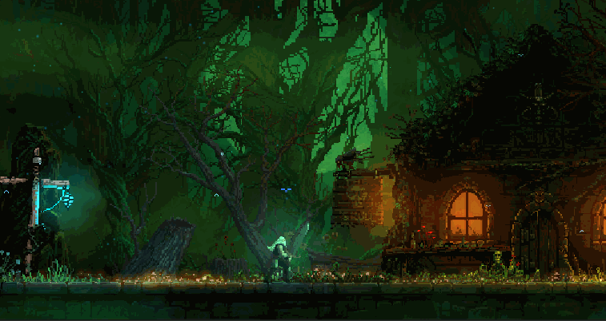

Ворон — одна з найрозумніших птахів у світі. Вони здатні розв’язувати складні задачі, запам'ятовувати обличчя людей і навіть використовувати інструменти.
Ці птахи зустрічаються у різних кліматичних зонах і відомі своєю соціальною поведінкою. Ворони часто утворюють зграї, де активно взаємодіють одне з одним. Вважається, що вони мають високий рівень інтелекту, що дозволяє їм пристосовуватися до різних умов життя.